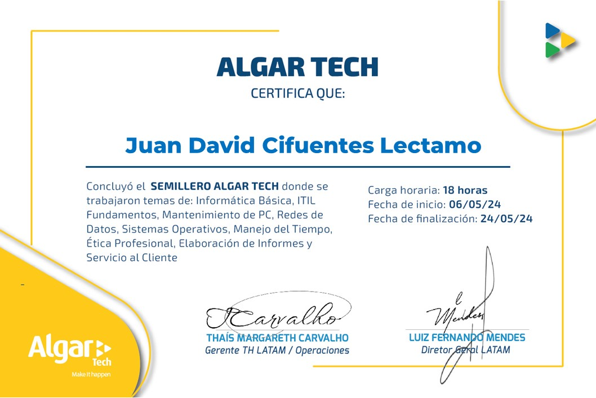

Semillero Algar Tech
Participé en el Semillero Algar Tech, un espacio formativo y colaborativo orientado a potenciar habilidades tecnológicas y de desarrollo de software, mediante talleres y proyectos prácticos.
Lo que obtuve al participar:
- Conocimiento práctico en tecnologías actuales y metodologías ágiles.
- Desarrollo de proyectos colaborativos e innovación tecnológica.
- El seguimiento y fortalecimiento en la adopción de redes de datos.
- Fomento de trabajo en equipo y liderazgo en entornos técnicos.
- Acceso a mentorías y recursos especializados para crecimiento profesional.
Esta experiencia me permitió fortalecer mi perfil técnico, profesional y humano, facilitando la inserción en el mundo laboral tecnológico.
Certificado Obtenido
